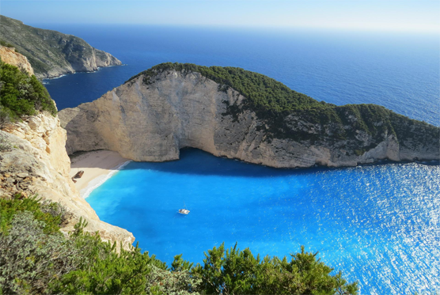

Upcoming Event

Pantai Ora
Pantai Ora adalah suatu pantai yang terletak Pulau Seram, kecamatan Seram Utara, Maluku Tengah, Maluku, Indonesia. Pantai yang berlokasi di ujung barat teluk Sawai ini berada di sebelah Desa Saleman dan Desa Sawai, di tepi hutan Taman Nasional Manusela
Learn More
Raja Ampat
Kepulauan Raja Ampat merupakan rangkaian empat gugusan pulau yang berdekatan dan berlokasi di barat bagian Kepala Burung Pulau Papua. Secara administrasi, gugusan ini berada di bawah Kabupaten Raja Ampat, Provinsi Papua Barat.s
Learn More